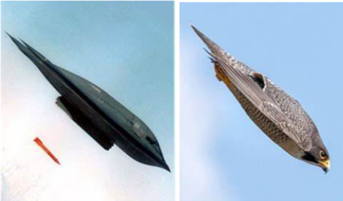
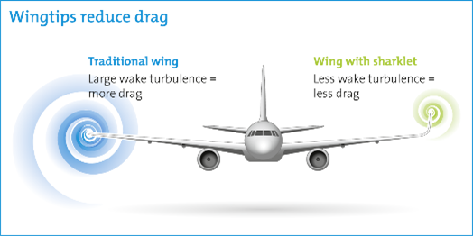

The study of aerodynamics, rooted in the natural world, has significantly influenced modern engineering. By observing and understanding
how birds, insects and other natural entities interact with air, engineers have developed advanced technologies that mimic these natural
aerodynamic principles. For instance, the design of aircraft wings and fuselages often draws inspiration from the wings of birds and the
streamlined bodies of fish. These designs aim to reduce drag and increase lift, enhancing fuel efficiency and performance. By integrating
these natural aerodynamic principles, engineers continue to push the boundaries of innovation, creating designs that are not only efficient
and effective but also sustainable and harmonious with the environment.
Introduction
Nature has inspired many advancements in aerospace engineering. By observing and studying birds like the Peregrine Falcon and eagles,
engineers have developed technologies that enhance modern aircraft. This article explores how these natural principles have influenced
the design of stealth bombers, fuel-saving winglets, adaptive wing morphing technologies, and JetZero Inc.'s innovative low-carbon
aircraft. These examples show how mimicking nature leads to more efficient and sustainable aviation technologies.
Analysis and discussion
Influence of Peregrine Falcon
The design of the B-2 Spirit stealth bomber has been significantly influenced by the Peregrine Falcon, particularly in aerodynamics and
stealth capabilities.The Peregrine Falcon is known for its sleek, aerodynamic shape, allowing it to dive at speeds close to 200 mph. Its
streamlined body reduces air resistance, enabling swift and efficient movement through the air. Inspired by this, the B-2 bomber features
a smooth, curved design that minimises drag and enhances aerodynamic efficiency, contributing to better fuel conservation and longer range.
Chirp(July 21, 2022).

Figure1
The B-2 bomber borrows several aerodynamic principles from the Falcon's:
Stealth Shape: Falcons have elegant, streamlined bodies that minimise drag and reduce turbulence. Similarly, the B-2’s shape is
designed to reduce radar cross-section and minimise drag, enhancing its stealth capabilities. As shown in Figure 1, the aircraft's
design closely mirrors the Falcon's shape.
Wing Configuration: The Falcon's wing structure allows for exceptional manoeuvrability, enabling sharp turns and rapid dives.
The B-2’s flying wing design, inspired by the Falcon, provides excellent stability and control, allowing it to perform complex manoeuvres
while maintaining stealth. The sleek wings that minimise drag and improve speed help the bomber maintain high speeds and fuel efficiency.
In conclusion, by mimicking the Falcon's aerodynamic shape and stealth capabilities, the B-2 achieves remarkable efficiency and stealth
in flight. Combining nature's design principles with advanced technology demonstrates the powerful impact studying the natural
world on human innovation.
Inspiration of Eagle Wing
Eagle wings have long fascinated engineers and scientists, leading to significant advancements in the design of modern winglets.
These natural marvels have provided insights into reducing drag, enhancing lift, and improving overall aerodynamic efficiency. Eagles
are masters of the sky, known for their ability to soar effortlessly for long periods. One of the key features of their wings is the
upturned feathers at the tips, which play a crucial role in minimising drag.

Figure2
These feathers reduce the strength of wingtip vortices—spirals of air created by the pressure difference between the upper and
lower surfaces of the wing. By studying these natural wingtip modifications, engineers have developed winglets that mimic this
effect, reducing induced drag and improving fuel efficiency. This is shown in Figure 2.
By adding winglets tilted upward at the tips, either to new aircraft or as retrofits to existing models, airlines achieved
significant fuel savings. HYDRO(June 2019) concluded that—3-5% reductions in fuel burn—depending on flight length and aircraft
type. Additionally, winglets play a vital role in modern aerodynamics, this reduction in drag results in improved airflow over
the wings, enhancing fuel efficiency and flight stability. Consequently, winglets contribute to significant fuel savings and
lower greenhouse gas emissions, demonstrating the elegance and efficiency of contemporary aviation engineering.
Inspiration of Wing Morphing
Wing morphing is an innovative concept that involves altering an aircraft's wing's shape, structure, and aerodynamic profile
during flight. This technology improves the performance, efficiency, and versatility by allowing them to
adapt to varying flight conditions. Birds, such as eagles and Falcons have inspired this concept. They constantly adjust their
wing shape and feather positions to control their flight dynamics, which allows them to be agile and efficient in the air.
Engineers have been working on adaptive wing technologies, mimicking these natural adjustments to improve aircraft performance.
These morphing wings can change shape during flight, adapting its aerodynamic shape to each flight condition to
obtain better performances, such as flight envelope, flight control, and flight range. ScienceDirect (June 2018). Birds use their
feathers to tweak airflow and stability. This concept has led to the development of aircraft with adaptive control surfaces
that mimic feather movements to enhance stability and control. Moreover, birds seamlessly switch between flapping and gliding
to conserve energy. Similarly, aircraft with morphing wings adjust their shape for different flight phases, resulting in
significant fuel savings and increased efficiency.
Influence of Manta Ray
JetZero Inc., a pioneering aviation startup, is boldly transforming the blueprint of commercial passenger aircraft.
The company has introduced a revolutionary
low carbon, triangle-shaped design, resembling a giant manta ray gliding through the skies.
Figure3
JetZero's innovative aircraft deviates from the traditional design, which typically features long, narrow tubes with separate
wings and tail stabilizers. Instead, it features a shorter and wider fuselage, this structure not only gives the aircraft a
distinctive appearance but also significantly enhances its lift capabilities. The unique benefits of JetZero’s Blended Wing
design become evident through its remarkable features. Unlike traditional aircraft, where the wings and fuselage are distinct
components, The aircraft merges its wings and fuselage seamlessly, eliminating any clear dividing line. Its triangular cabin
includes three aisles, enhancing the boarding experience and maximising interior space. The spacious interior maximises the
use of available space, providing more room for passengers and their belongings. This design innovation reduces drag, allowing
for a quieter and more stable flight experience.LJ.(November 14, 2023).
Additionally, the Blended Wing design brings numerous operational advantages. The aircraft's lighter structure reduces fuel
consumption, contributing to its low-carbon footprint. The quieter operation minimises noise pollution, making it more
environmentally friendly and preferable for airports located near residential areas.
Conclusion
The design of the B-2 Spirit stealth bomber, inspired by the Peregrine Falcon, enhances stealth and efficiency. Winglets,
modeled after eagle wings, Winglets have revolutionised aircraft efficiency by reducing drag and fuel consumption.
Adaptive wing morphing technologies mimic bird flight for better performance in varying conditions. Lastly, JetZero Inc.'s
manta ray-inspired design shows the potential for sustainable, high-performance commercial aircraft. These innovations
demonstrate how studying nature can lead to more efficient and advanced aviation technologies.

 Figure3
JetZero's innovative aircraft deviates from the traditional design, which typically features long, narrow tubes with separate
wings and tail stabilizers. Instead, it features a shorter and wider fuselage, this structure not only gives the aircraft a
distinctive appearance but also significantly enhances its lift capabilities. The unique benefits of JetZero’s Blended Wing
design become evident through its remarkable features. Unlike traditional aircraft, where the wings and fuselage are distinct
components, The aircraft merges its wings and fuselage seamlessly, eliminating any clear dividing line. Its triangular cabin
includes three aisles, enhancing the boarding experience and maximising interior space. The spacious interior maximises the
use of available space, providing more room for passengers and their belongings. This design innovation reduces drag, allowing
for a quieter and more stable flight experience.LJ.(November 14, 2023).
Additionally, the Blended Wing design brings numerous operational advantages. The aircraft's lighter structure reduces fuel
consumption, contributing to its low-carbon footprint. The quieter operation minimises noise pollution, making it more
environmentally friendly and preferable for airports located near residential areas.
Figure3
JetZero's innovative aircraft deviates from the traditional design, which typically features long, narrow tubes with separate
wings and tail stabilizers. Instead, it features a shorter and wider fuselage, this structure not only gives the aircraft a
distinctive appearance but also significantly enhances its lift capabilities. The unique benefits of JetZero’s Blended Wing
design become evident through its remarkable features. Unlike traditional aircraft, where the wings and fuselage are distinct
components, The aircraft merges its wings and fuselage seamlessly, eliminating any clear dividing line. Its triangular cabin
includes three aisles, enhancing the boarding experience and maximising interior space. The spacious interior maximises the
use of available space, providing more room for passengers and their belongings. This design innovation reduces drag, allowing
for a quieter and more stable flight experience.LJ.(November 14, 2023).
Additionally, the Blended Wing design brings numerous operational advantages. The aircraft's lighter structure reduces fuel
consumption, contributing to its low-carbon footprint. The quieter operation minimises noise pollution, making it more
environmentally friendly and preferable for airports located near residential areas.